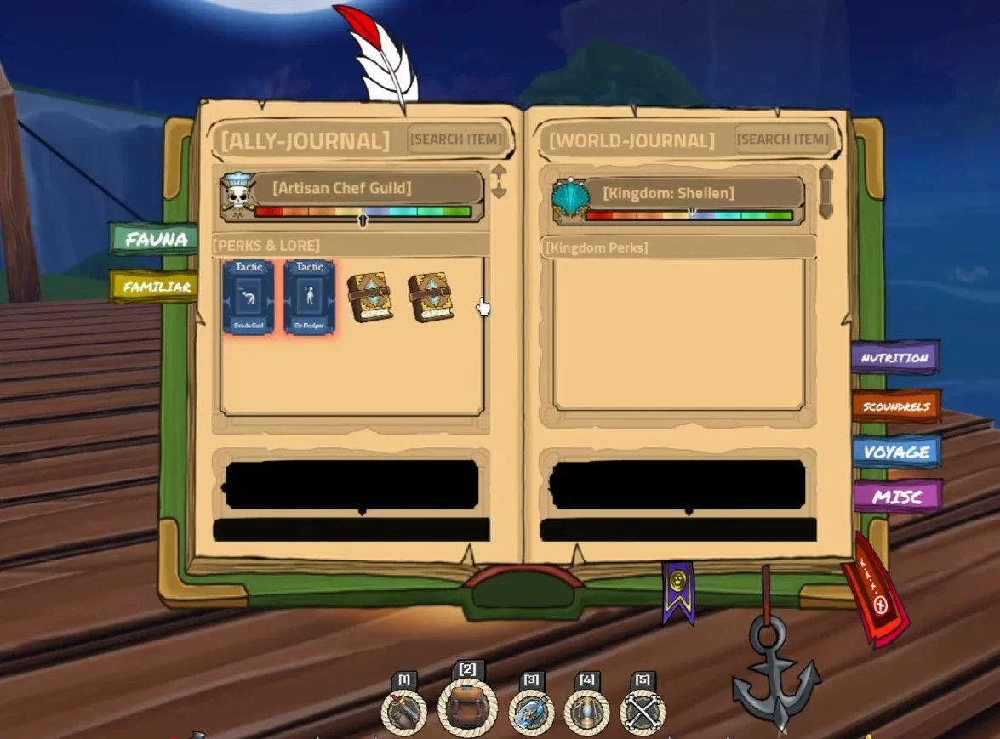
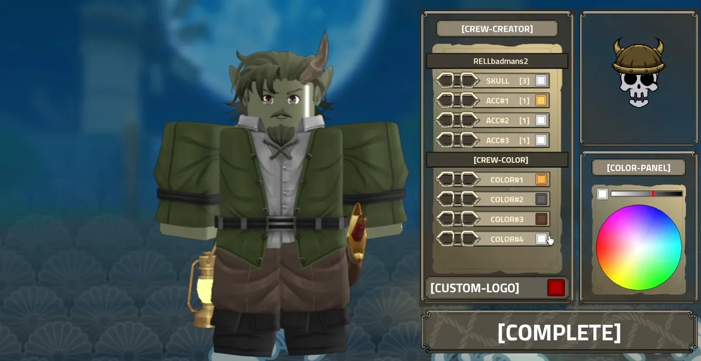
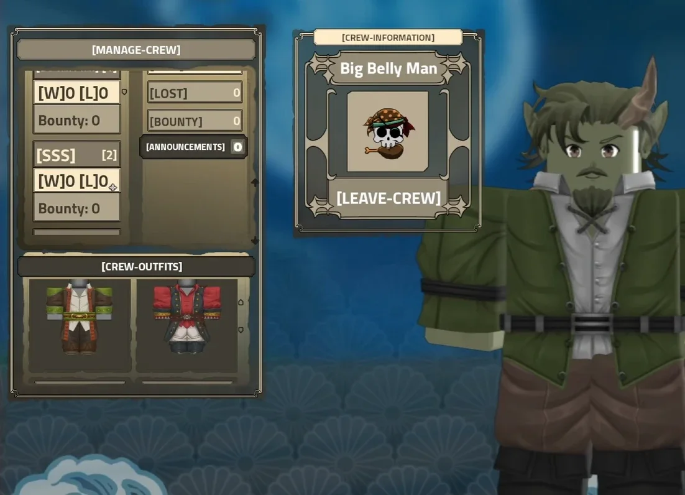
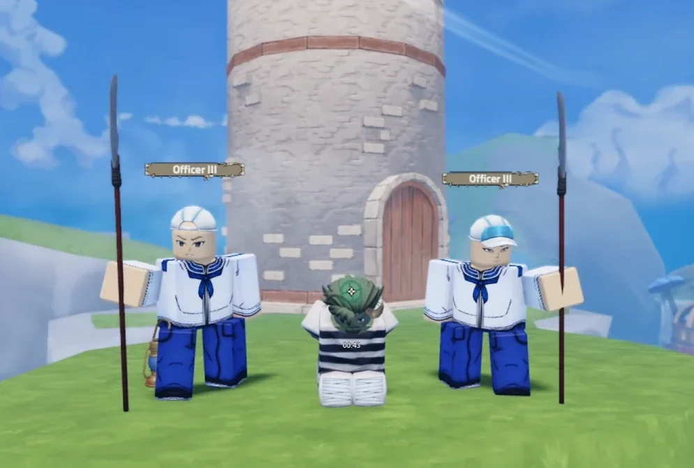
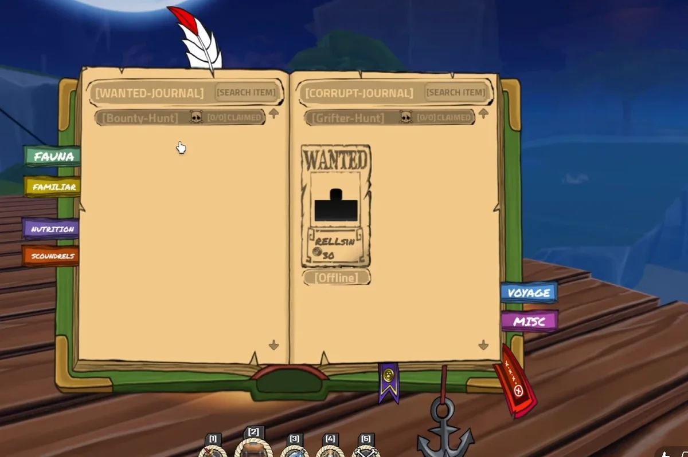
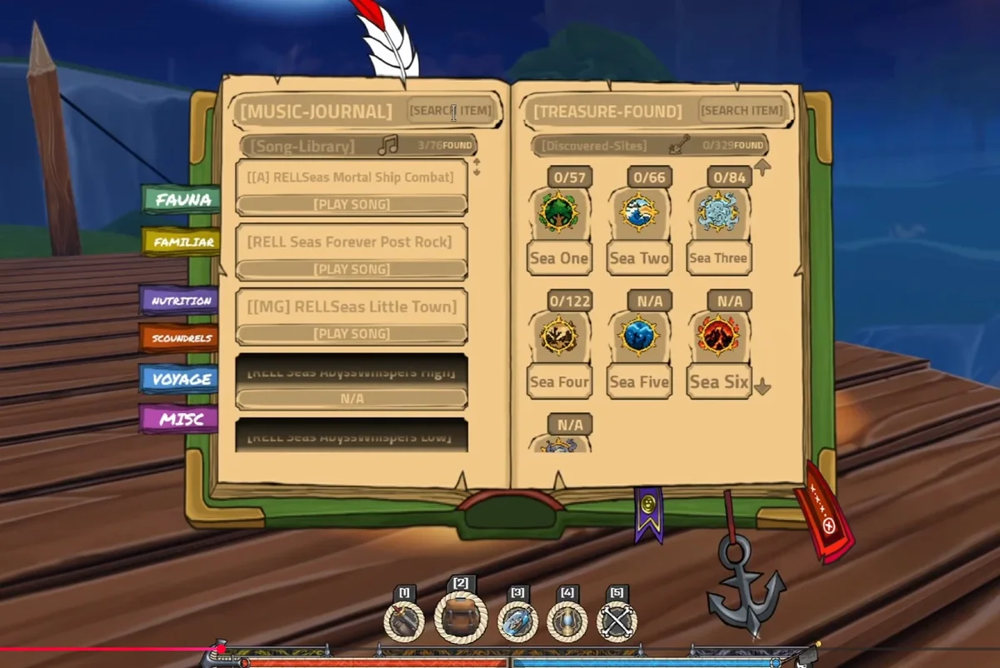
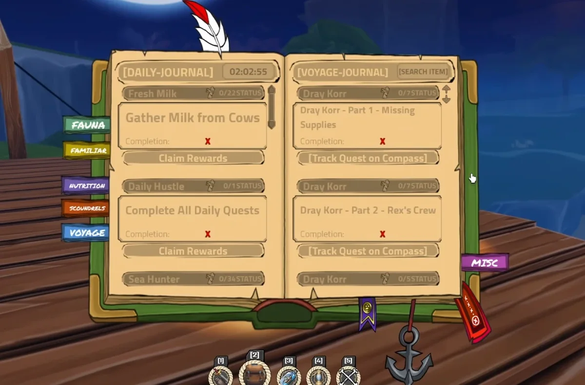
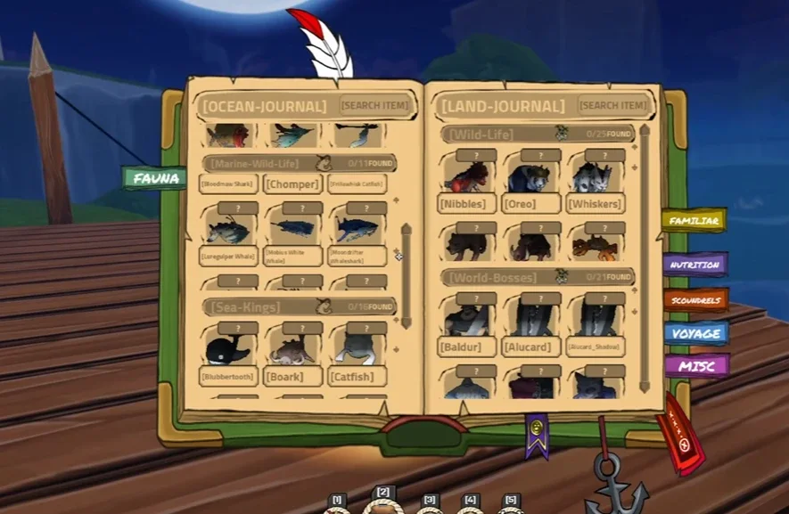

Au début de l’aventureConfirmé
Choisis la faction Pirates au départ. Aucun recruteur PNJ : les pirates se font eux-mêmes. Le premier ennemi rencontré est un pirate du tutoriel.
DOSSIER
Pirates, Marines, Révolutionnaires, Gouvernement et chasseurs de primes : rangs, prison, crews et réputation. Compilé le 27 novembre 2026 à partir des wikis communautaires et de captures de démonstration.
VUE D’ENSEMBLE
Le wiki communautaire décrit quatre factions jouables et une faction PNJ. Chaque choix que tu fais avec les équipages du monde s’accumule de façon permanente.
Sources en désaccord. Le wiki (rellseaswiki.com, pages mises à jour entre avril et octobre 2026) liste quatre factions jouables : Pirates, World Seas Marine Corps, Arms of Revolution et World Seas Government. Le guide rellseas.org du 25 août 2026 n’en cite que trois : Pirates, Marines et Chasseurs de primes. Les anciennes notes du projet en comptaient cinq. Le jeu n’est pas sorti : tout est susceptible de changer.
| Faction | Philosophie | Comment rejoindre | Statut |
|---|---|---|---|
| Pirates | Liberté avant tout ; rejettent l’autorité du Gouvernement et de la Marine | Choisir Pirates au début du jeu, sans recruteur | Confirmé · wiki |
| Marines | Justice et ordre ; servent le Gouvernement et éliminent la piraterie | Base Marine, bâtiment principal, Recruteur : départ au rang Recruit | Confirmé · wiki |
| Révolutionnaires | Renverser le Gouvernement et libérer les territoires opprimés | Recrutement discret attendu, non révélé | Pré-release |
| Gouvernement | Contrôle : l’ordre exige l’autorité absolue | Non révélé avant le lancement | Pré-release |
| Chasseurs de primes | Traquer les pirates pour une prime, en indépendant | Non documenté par le wiki | Statut contesté |
Voie sans obligations : on navigue, on se bat et on explore librement. Plus de 40 crews PNJ réagissent à tes choix.
Lire le dossier →Hiérarchie de 21 rangs, arrestations, prison et Hades Asylum. La faction la mieux documentée.
Lire le dossier →Faction clandestine opposée au Gouvernement, presque entièrement pré-release.
Lire le dossier →Au sommet de la hiérarchie, corrompu et explicitement pas la voie du héros.
Lire le dossier →Faction ou mécanique ? Le journal Wanted et les affiches de prime suggèrent un système à part entière.
Lire le dossier →FACTION · JOUABLE
La voie de la liberté absolue : les Pirates naviguent où ils veulent, combattent qui ils veulent et ne répondent à personne.
Philosophie. Liberté avant tout. Les Pirates rejettent l’autorité du Gouvernement et de la Marine, forgent leur propre chemin, bâtissent leurs crews et écrivent leur légende. Ils sont supervisés par le Council of Piracy, l’autorité pirate qui sert aussi de voie d’affiliation vers la reconnaissance de crew officiel.
Choisis la faction Pirates au départ. Aucun recruteur PNJ : les pirates se font eux-mêmes. Le premier ennemi rencontré est un pirate du tutoriel.
Plus de 40 factions pirates PNJ apparaissent dynamiquement dans des événements sur les îles et en mer. Chaque rencontre a des conséquences durables.
| Choix | Conséquence |
|---|---|
| Aider le crew dans un événement | Réputation croissante avec lui : objets, techniques ou armes exclusifs possibles |
| Le combattre | Il devient un ennemi permanent, hostile aux rencontres suivantes |
| L’ignorer | Relation neutre conservée |
Aucune partie ne se ressemble : l’historique de relations est propre à chaque joueur, et deux visites d’une même île ne se déroulent pas forcément pareil. Aider un crew peut te coûter de la réputation auprès de ses ennemis.
| Crew | Perks | Détail |
|---|---|---|
| Black Lotus Pirates | Tactic Big Daze · Agile Geppo Master · Agile Flash Dash | Geppo Master donne 1 Geppo de plus |
| Yanko Berry Pirates | Fierce Full Stack · Tactic Parryingan | Parryingan augmente la Parry Frame de 2 |
| Artisan Chef Guild | Deux cartes Tactic (dont Evade God) et deux livres de lore | Visible sur la capture du journal des alliés |
| Crescent Fang · Crimson Wave · Dancing Blade · Silverhead · Starlit · Sunset Fury | Perks non révélés | Noms vus dans la liste de crews du Shell Phone |

Un crew de joueurs n’est pas une faction. Le capitaine le crée dans le Crew Creator : un nom, un crâne (Skull), trois accessoires, quatre couleurs et un logo personnalisé facultatif, puis Complete. Le coût n’est pas confirmé.


| Rang | Rôle | Rang | Rôle |
|---|---|---|---|
| 1 | Captain | 5 | Quartermaster |
| 2 | First-Mate | 6 | Senior |
| 3 | Second-Mate | 7 | Junior |
| 4 | Third-Mate | 8 | Deckboy |
Le panneau Manage Crew contient Crew Roles, Member List et Crew Outfits. Le capitaine renomme les rôles, invite par pseudo, classe et expulse les membres, publie des annonces et peut dissoudre le crew. N’importe quel membre peut le quitter.
Un crew démarre avec 20 places, davantage peuvent être achetées. Jusqu’à 10 rangs, de Captain au rôle le plus bas. Les tenues de crew sont listées par plage de rangs et les développeurs ont dit qu’elles sont toutes gratuites.
La vue de classement montre les colonnes Win, Lost et Bounty.
Tous les crews n’offrent pas les mêmes avantages : le lore donne des bonus en jeu, que les développeurs n’expliquent volontairement pas. L’onglet Familiar du journal liste les crews avec leurs perks.
Le Council of Piracy est un groupe communautaire officiel géré par l’équipe RELL Games. Il sert de point de reconnaissance de crew officiel : les groupes pirates affiliés peuvent apparaître sur la Enemies List (Enemy Declarations activées) et voir leur logo représenté dans le système de crews. La candidature était annoncée comme « en attente » sur le Discord de la communauté. Ce n’est pas une faction jouable distincte, et un crew de joueurs ne devient pas officiel automatiquement.
FACTION · JOUABLE
Une organisation militaire centralisée chargée de faire respecter l’ordre et la justice. Sous une hiérarchie stricte, les Marines combattent la piraterie et protègent les territoires alliés.
Philosophie. Justice et ordre sur les mers. Les Marines servent le World Seas Government : ils éliminent la piraterie, protègent les civils et maintiennent la loi. Les titres de grades s’inspirent de la hiérarchie militaire de One Piece.
Entre dans une base Marine, rends-toi au bâtiment principal et trouve le PNJ Recruteur : tu es enrôlé au rang de Recruit.
Les bases sont réparties dans le monde, de tailles variables. Le wiki n’en recense qu’une, sans nom, dans Wilderness (difficulté 3 étoiles). Carte et accès non confirmés.
Toutes les conditions de promotion sont « non confirmées ». Divergence : la page système Marines du wiki n’énumère que 7 grades (Seaman, Seaman Apprentice, Petty Officer, Lieutenant, Captain, Vice Admiral, Admiral) alors que la page de la faction en liste 21. Retiens 21 comme référence tant que le jeu n’est pas sorti. Les rangs montent via la réputation et les missions.
| Rang | Privilège | Condition |
|---|---|---|
| Admiral | Accès à tout Hades Asylum par l’ascenseur ; appel Buster Call (Island Destroyer) | Exige l’affiliation au Gouvernement : impossible par le seul combat |
| Vice Admiral | Techniques de Haki avancées et missions de haut niveau | Non confirmé |
| Captain | Commande les équipages de navires de guerre Marine | Non confirmé |
| Étape | Ce qui se passe |
|---|---|
| 1 · Délit | Tu blesses un civil : les PNJ alentour courent alerter un Marine, qui t’enquête et te suit. Un seul coup sur un civil déclenche une réponse immédiate. |
| 2 · Vagues | Des gardes arrivent par vagues, affichées en étoiles bleues à l’écran. Vague 1 : 3 Marines ; vague 2 : 6. Le compteur 3/3 a été montré. |
| 3 · Capture | Si un Officer te met à terre, un compte à rebours démarre au-dessus de ton corps avec une barre de timing. Réussir le timing affiche PERFECT et t’évite la capture. |
| 4 · Prison | À zéro, tu es emprisonné. Se cacher dans un buisson peut faire passer un garde sans te voir. |

| Appel | Effet | Restriction |
|---|---|---|
| Report Crime | Envoie les Marines sur la position d’un joueur qui te harcèle, te chasse ou te vole | Pourrait être réservé aux Marines pour éviter les abus |
| Buster Call | Island Destroyer | Admiral ou plus |
Le Snail Phone (Den Den Mushi du jeu) est donné par le Shell Scribe pendant la quête de départ Riven A. Graves. Appuie sur R, choisis Snail Phone, cherche un joueur ou « marine » et lance l’appel. Les deux appels partagent une recharge d’environ 120 secondes.
Événements dédiés : les pirates qui battent une flotte Marine gagnent des récompenses de combat importantes. Vaincre des Marines fait aussi dropper des posters de faction uniques.
Le panneau Outfits propose 27 tenues Marine.
Style de combat technique inspiré des agents du Gouvernement : dash instantané, sauts aériens, coups de lame et durcissement du corps. Probablement lié aux Marines ou au Gouvernement, mais la méthode d’obtention n’est pas publiée.
Une mauvaise réputation attire l’attention des Marines ; une bonne réputation ouvre l’apprentissage de posters auprès des crews alliés.
JUSTICE MARINE
Le système de prison punit les joueurs qui commettent des crimes, comme frapper un civil ou tuer un PNJ. Être emprisonné n’est jamais une impasse : miner réduit la peine, des amis peuvent te libérer, et le système Ghoul permet de s’évader de Hades Asylum.
| Type | Lieu | Gardes | Occupation | Peine |
|---|---|---|---|---|
| 1 · Stocks | Place du village | Aucun garde cité ; les autres joueurs peuvent te frapper | Aucune : tu restes bloqué en tenue rayée | Non confirmée |
| 2 · Cellule | Prison de ville | Non précisés | Attendre dans une vraie cellule (barreaux, lits, bougie) | Petit minuteur sur ton dos |
| 3 · Camp Marine | Camp de sable à palissade | Marines du camp | Miner des rochers, enchaîné à une ancre | Miner la réduit |
| 4 · Plateforme et prison minière | Plateforme d’herbe flottante, puis plage | Deux Officer III | Miner enchaîné à un rocher sur une plage | Miner la réduit |
| 5 · Hades Asylum | Prison de sécurité maximale | Marines, Admirals, Marines corrompus | Objectifs propres à chaque niveau, biome et gameplay différents | Évasion très difficile |
Ce qui décide du palier n’est pas confirmé. Chaque palier est décrit comme « le suivant après » le précédent. Hades Asylum est réservé aux crimes graves, aux primes élevées ou aux menaces persistantes pour les opérations Marine.
Quand le compte à rebours de capture arrive à zéro, tu es verrouillé dans des pilori de bois au centre de la ville, en tenue rayée de prisonnier.
Autre danger : les joueurs peuvent te frapper pendant que tu es retenu. La manière d’en sortir n’est pas confirmée.
Tu purges ta peine dans une vraie cellule avec barreaux, lits et une bougie. Un petit minuteur apparaît dans ton dos.
Un camp de sable entouré d’une palissade en bois. Tu es enchaîné à une ancre et tu mines des rochers à la pioche : miner réduit ta peine.
Tu peux traîner la chaîne dans le camp pendant que tu travailles.
Une petite plateforme d’herbe flottante gardée par deux Officer III, puis une prison minière où tu es enchaîné à un rocher sur une plage. Miner réduit aussi la peine.
Au-delà des paliers normaux, la prison de la Marine. Six niveaux, un ascenseur, une entrée cachée et un biome différent par étage. Les criminels les plus dangereux sont au plus profond.

| Étape | Ce qui se passe | Ce que tu peux faire |
|---|---|---|
| 1 · Crime | Tu attaques un civil ou tues un PNJ ; les PNJ proches courent prévenir un Marine. | Te cacher dans un buisson : dans la démo, le Marine est passé sans voir le joueur caché. |
| 2 · Poursuite | Des vagues de Marines arrivent (étoiles bleues, 3 puis 6 gardes). | Fuir, combattre ou appeler ton crew. |
| 3 · Capture | Un Officer te met à terre ; un compte à rebours avec barre de timing démarre. | Réussir le timing : PERFECT, tu romps la capture. |
| 4 · Détention | Tu es placé dans un palier de prison. Les menottes rendent l’évasion ×20 plus dure. | Miner pour réduire la peine, attendre un sauvetage. |
| 5 · Libération | Fin de peine : réveil dans un lit d’une maison de Bayside Town, puis retour exactement où tu étais. | Reprendre ta route. |
| Voie | Détail | Palier concerné |
|---|---|---|
| Rompre la capture | Frapper la barre de timing avant la fin du compte à rebours : PERFECT. | Avant la prison |
| Fin de peine | Tu te réveilles à Bayside Town, au lit. | Paliers 1 à 4 |
| Miner | Chaque rocher miné raccourcit la peine. | Paliers 3 et 4 |
| Sauvetage d’un ami | Un ami attaque un garde pour te libérer ; cela envoie une vague de Marines après lui. | Paliers 1 à 4, crewmate à Hades |
| Système Ghoul | Les pirates capturés se battent pour sortir de Hades Asylum. | Hades Asylum |
| Libération par un Marine corrompu | Les Marines corrompus peuvent libérer des PNJ emprisonnés ; les règles complètes sont incomplètes. | Hades Asylum |
| Mort | Documentée comme une voie de sortie ; les pénalités ne sont pas publiées. | Hades Asylum |
| Intervention d’un Marine | Un Marine de rang élevé peut relâcher ou détenir des PNJ de cellules. | Hades Asylum |
Item utilitaire exclusif à la faction Marine. On les applique avec la touche N sur un joueur à terre ou consentant ; elles servent aussi à emprisonner des PNJ. Une victime peut tenter un mini-jeu de timing (barre espace) ; s’en libérer est environ 20 fois plus dur qu’une évasion normale. Comment les obtenir n’est pas confirmé, au-delà de rejoindre les Marines.
Dans les camps, la pioche et la chaîne font partie du dispositif : miner est l’action qui réduit ta peine.
Le Movie 3 a montré le mini-jeu de crochetage ouvrant une cage de prison. Le vol, lui, fait baisser la réputation si tu es pris.
Les Real Brothers ont évoqué de gérer la faction Marine comme une communauté ouverte, où des joueurs deviendraient gardes de prison.
| Faction | Position |
|---|---|
| Pirates | Les plus exposés : prime élevée, risque de capture et d’enfermement jusqu’à Hades Asylum. |
| Marines | Arrêtent, menottent, escortent ; l’Admiral commande l’ascenseur de Hades. Reçoivent une récompense proportionnelle à la prime du criminel. |
| Marines corrompus | Peuvent libérer des PNJ emprisonnés. Le journal Corrupt-Journal et le Grifter-Hunt vont dans ce sens, sans lien confirmé. |
| Révolutionnaires, Gouvernement | Aucun rôle documenté dans le système de prison. |
Détails non publiés : objectifs des niveaux 1 à 5 de Hades, boss notables, dégâts, cooldowns, PV, temps d’apparition, durée des peines et coût de l’échec d’une évasion.
INSPIRATION · ONE PIECE
Le wiki présente Hades Asylum comme l’interprétation par RELL Seas de l’Impel Down de One Piece : prison de sécurité maximale, niveaux superposés, ascenseur, et les pires criminels tout en bas.
Comparaison de lecture, pas une confirmation. Les noms d’étages ci-dessous viennent de l’œuvre One Piece. Le wiki de RELL Seas ne documente aucun nom de niveau pour Hades Asylum : seules la numérotation (1 à 5 plus 5.5) et quelques mécaniques sont connues. Le rapprochement est une piste, pas un fait.
| Niveau | Impel Down dans One Piece | Hades Asylum dans RELL Seas | Lecture |
|---|---|---|---|
| Niveau 1 | Crimson Hell : bassin de sang et montagne d’aiguilles | Listé, sans détail | Inconnu |
| Niveau 2 | Wild Beast Hell : prisonniers livrés à des bêtes | Listé, sans détail | Inconnu |
| Niveau 3 | Starvation Hell : la faim et la chaleur | Listé, sans détail | Inconnu |
| Niveau 4 | Burning Hell : chaudrons et feu | Listé, sans détail | Inconnu |
| Niveau 5 | Freezing Hell : froid extrême | Listé, sans détail | Inconnu |
| Niveau 5.5 | New Kama Land : niveau caché, intermédiaire | Présent dans les données du wiki | Parallèle probable |
| Niveau 6 | Eternal Hell : les pires criminels | Non listé séparément | À confirmer |
Le parallèle le plus parlant est le niveau 5.5 : la numérotation 1 à 5 puis 5.5 reprend celle de l’œuvre. Dans l’œuvre, les prisonniers les plus dangereux sont tout en bas ; le wiki dit la même chose pour Hades Asylum.
Chaque niveau fonctionne comme une instance de serveur séparée.
Plusieurs niveaux, chacun avec son biome, son mode de jeu et ses énigmes. Le nombre exact reste à confirmer.
Un système d’ascenseur fonctionnel relie tous les niveaux. Seuls les Admirals l’utilisent pour circuler librement.
Le chemin d’accès n’est pas évident.
Mécanique d’évasion : les pirates capturés se battent pour sortir de l’intérieur.
Ils peuvent libérer des PNJ emprisonnés.
Les développeurs ont dit que l’asile ajoute d’autres niveaux après les paliers normaux.
The Seven Layers est une zone sous-marine à sept couches avec un Leviathan par couche, pas une prison. Le catalogue du codex la signale à part.
| Profil | Accès |
|---|---|
| Admiral | Ascenseur : circule librement sur les 6 étages |
| Autre Marine | Doit se battre étage par étage |
| Pirate capturé | Combat étage par étage via le système Ghoul |
| Ami d’un détenu | Peut tenter un sauvetage ; une vague de Marines le poursuit |
Wiki · Hades Asylum · Jail System · Handcuffs · The Seven Layers
FACTION · PRÉ-RELEASE
Faction insurgée, opposée idéologiquement et militairement au Gouvernement. Là où le Gouvernement contrôle et la Marine applique, les Révolutionnaires renversent le système de l’intérieur.
Philosophie. Démanteler le World Seas Government et libérer chaque territoire opprimé. L’ordre actuel est corrompu et doit être détruit ; le pouvoir doit revenir au peuple. Le conflit entre Révolution et Gouvernement doit structurer une grande partie du paysage politique du jeu.
Un processus de recrutement discret est attendu, plutôt qu’un enrôlement public chez un PNJ. Non confirmé.
Le menu des tenues contient une catégorie Révolutionnaire de 8 pièces, dont un chapeau et un objet de style lunettes ou masque. Une tenue « Revolutionary Cadet » a aussi été aperçue en octobre.
Style à mains nues, inspiré de Sabo : tout le poids dans des frappes en griffes, à courte portée, plutôt que la vitesse. Moveset et conditions non publiés.
Rang, conditions de rang et méthode d’entrée : non confirmés.
FACTION · PRÉ-RELEASE
L’autorité suprême des mers, composée de nations puissantes alliées. Elle surplombe la Marine et fixe l’ordre du monde.
Philosophie. Le contrôle. L’ordre exige l’autorité absolue : le pouvoir doit être concentré, pas distribué, et le monde est mieux gouverné par ceux assez forts pour le tenir. La faction est corrompue, moralement grise et explicitement pas la voie du héros.
Le Gouvernement supervise la Marine comme son bras armé. Le grade d’Admiral exige son appui, confirmé lors du showcase des développeurs.
Pas encore révélé. La faction figure sur la liste officielle des affiliés de la communauté RELL Seas.
Technique réservée aux agents d’élite dans l’univers d’origine ; ici probablement liée aux Marines ou au Gouvernement.
STATUT CONTESTÉ
Les chasseurs de primes apparaissent dans le guide rellseas.org et dans les anciennes notes, mais pas parmi les quatre factions du wiki. Les captures montrent un système de primes bien réel.
| Source | Position |
|---|---|
| rellseas.org (25 août 2026) | Troisième faction : opérateurs indépendants qui chassent les pirates pour une prime, ni dans la Marine ni dans un équipage pirate. |
| Wiki (factions, 15 août 2026) | Non listés : quatre factions jouables et une faction PNJ. |
| Wiki, page Marines | La chasse légitime aux pirates joueurs est présentée comme un avantage Marine, avec récompense proportionnelle à la prime. |
| Captures fournies | Journal des Scoundrels : Wanted-Journal et Corrupt-Journal. |
Lecture prudente. Le journal propose deux chasses : Bounty-Hunt et Grifter-Hunt. L’affiche WANTED montre un joueur avec sa prime et son statut hors ligne. La chasse à la prime semble donc être un système accessible à plusieurs factions plutôt qu’une faction de départ. Le wiki décrit aussi un système de recherche inspiré de GTA, avec des vagues de Marines.
Onglet dédié aux hors-la-loi, à côté de Fauna, Familiar, Nutrition, Voyage et Misc.
Les pirates accumulent une prime dynamique : elle les expose aux Marines joueurs et aux patrouilles PNJ.
Crochetage, discrétion et pillage. Se faire prendre en train de voler fait baisser la réputation auprès des factions proches, qui peuvent devenir hostiles.
Le mot désigne un escroc. Son rôle exact, et le lien avec les appels frauduleux du Snail Phone confirmés par les développeurs, n’est pas établi.
À trancher : les chasseurs de primes sont-ils une faction de départ, une spécialisation, ou seulement le journal Wanted ? Les sources ne le disent pas.
SYSTÈMES LIÉS
Les factions ne sont qu’une couche : la réputation, les crews et le journal de bord relient tout le reste.
| Réputation | Conséquences |
|---|---|
| Négative | Les PNJ de faction deviennent hostiles ; plus de risques d’attention et de poursuite de la Marine ; accès réduit aux services de faction et à l’apprentissage de posters |
| Positive | Apprentissage de posters auprès des crews alliés ; activités et récompenses propres à la faction ; avantages des 40 crews pirates |
Une barre de réputation du personnage, du rouge (mauvaise) au vert (bonne), apparaît sur l’écran Talent, à côté d’une jauge de grade F, D, C, B, A. Tu démarres près du milieu, indiqué Neutral en haut à droite de l’écran. Les crews ont leur propre réputation, et les royaumes aussi (World-Journal : Kingdom Shellen).
| Onglet | Journaux | Contenu vu |
|---|---|---|
| Fauna | Ocean-Journal · Land-Journal | Créatures de mer et de terre, Sea-Kings, World-Bosses (Baldur, Alucard) |
| Familiar | Ally-Journal · World-Journal | Crews et guildes avec réputation, perks et lore ; royaumes |
| Nutrition | Food-Journal · Recipe-Journal | Plats cuisinés, recettes apprises (0/84) |
| Scoundrels | Wanted-Journal · Corrupt-Journal | Bounty-Hunt et Grifter-Hunt, affiches WANTED |
| Voyage | Daily-Journal · Voyage-Journal | Quêtes quotidiennes avec minuteur ; quêtes Dray Korr, suivi sur la boussole |
| Misc | Music-Journal · Treasure-Found | Bibliothèque de musiques (3/76) ; sites de trésor (0/329) |



Les chiffres du journal des trésors recoupent les relevés : 57 + 66 + 84 + 122 = 329 sites pour les quatre premières mers, les mers 5 et 6 n’étant pas encore disponibles dans la démo.
AIDE AU CHOIX
Selon ton style de jeu, et en tenant compte de ce qui est confirmé.
| Tu veux… | Choix | Pourquoi | Fiabilité |
|---|---|---|---|
| Naviguer, explorer, jouer en équipage | Pirates | Liberté totale, pas de taxes, relations avec 40+ crews, PvP de crew | Confirmé · wiki |
| Une progression par grades et une hiérarchie | Marines | 21 rangs, missions exclusives, arrestations et prison | Confirmé · wiki |
| Chasser des joueurs pour les primes | Marines, ou système Wanted | La chasse légitime est un avantage Marine ; le journal Bounty-Hunt existe | À confirmer |
| Jouer la rébellion et l’underground | Révolutionnaires | Dragon Claw Fist et marchés clandestins probables | Pré-release |
| Le pouvoir et l’autorité | Gouvernement | Au-dessus des Marines, mais détails non révélés | Pré-release |
Choix prudent : Pirates est la seule voie à la fois confirmée et sans obligation, avec Marines pour une structure claire. N’engage pas d’argent pour une faction pré-release.
La faction se choisit au début du jeu. Si l’on peut en changer, et comment, n’a pas été confirmé avant le lancement.
Chaque faction a son système de rangs lié à la réputation. Seule la Marine a une échelle publiée (21 rangs), sans conditions.
Un crew de joueurs est un groupe avec rangs, tenues et classement. L’affiliation officielle passe par le Council of Piracy.
Rokushiki pour Marines ou Gouvernement, Dragon Claw Fist pour la Révolution. Aucun accès n’est confirmé.
SOURCES
Pages communautaires consultées le 27 novembre 2026. Les captures de démonstration ont été fournies pour cet atlas.
Wiki · Factions · Pirates · Marine Corps · Arms of Revolution · Government · Council of Piracy
Crews · Réputation · Marines · Prison · Hades Asylum · Snail Phone · Guide rellseas.org